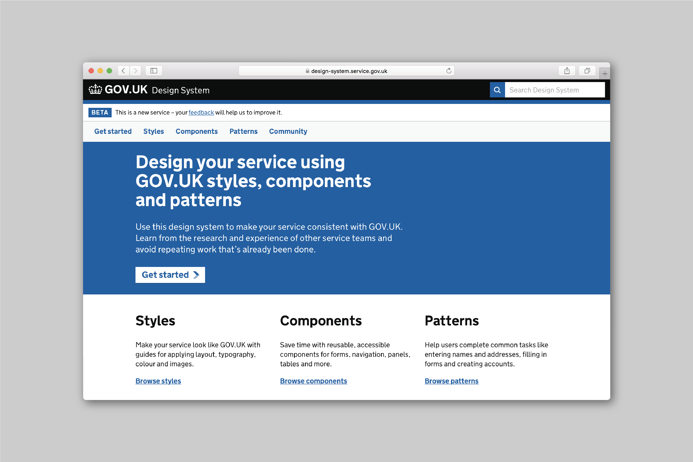
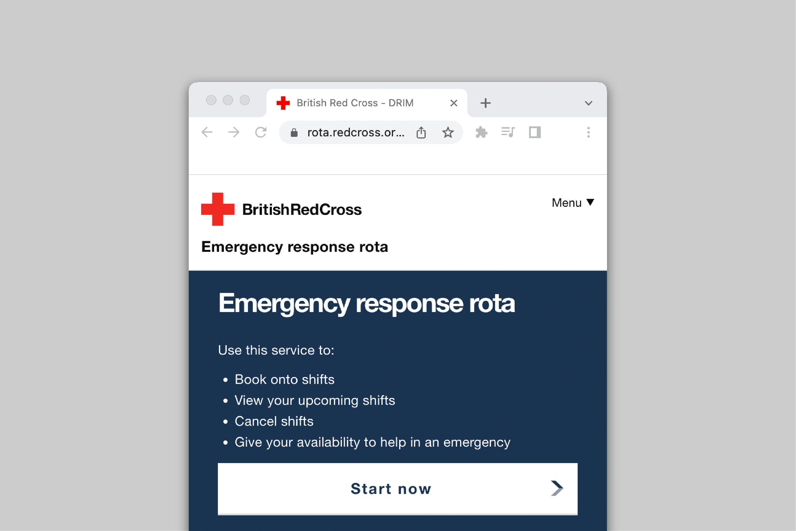

Automation and taxes
I've spent all of 2024 so far working with a team introducing devolved taxes to Wales. With a big focus on automation, as people paying new taxes grows expotentially.
Welsh Revenue Authority 2024
Check balance
First bit of working software to come out of work with Wales' tax authority. It lets staff automatically see how much tax someone owes when they call up. It replaces multiple phone calls, manual system checks and calculations.
Welsh Revenue Authority 2024
Placing people from prison
The new digital service improves the rate of people leaving prision placed into accommodation. I led the design for the first software release. So far used in 17 prisons.
HM Prison Service 2023

Explaining devices that learn
I led the creative direction of a project for Google to communicate a type of AI, federated learning.
Google AI 2019
Operator Manual
I designed a manual for Red Cross staff answering calls made to the Covid support line, including its content and tools. It was accessed 22,000 times in its first two weeks.
British Red Cross 2020

Authenticator device
I helped designed a device for clinicans to securely access Deepmind software in hospitals. Doing both digital and physical product design, it was part of a bigger bit of work to safeguard healthcare data.
Google Deepmind 2017
Aid spending
I briefly led the design of how a govenrment department publishes it's aid spending, including introducing clearer report layouts and edit histories.
GOV.UK 2023

GOV.UK Design System
I worked with my teammates at GDS to create and test the information architecture and naming conventions for the alpha version of the GOV.UK Design System.
GOV.UK 2017

Emergency response rota
I designed and prototyped the rota for the British Red Cross emergency response team. It’s now used to mobilise hundreds of volunteers for emergencies such as fires and floods.
British Red Cross 2020
Link together my carbon, car and cash
For a while I’ve felt data about cars could be better joined up to improve both driver experience and regulation. In this blog post I illustrate my ideas.
Personal work 2022
Support line
I envisaged and designed the British Red Cross Covid support line for people to access food and services. I led a multi-disciplinary team to build this service in the first few weeks of the Covid-19 pandemic.
British Red Cross 2020
Design approach
I designed and built a small website to show how, as one of the UK's biggest charities, the British Red Cross takes a design approach to problems.
British Red Cross 2020

GOV.UK task list page
I designed the first version of the GOV.UK task list page. So far it’s been used by over two million people across dozens of digital services.
GOV.UK 2017

Naming your service
I wrote the GOV.UK guide for how public services should be named in the Internet age, drawing on best practice around government. The guide has been read 11,000 times by digital teams.
GOV.UK 2016

Open APIs for telecoms
I prototyped services that could be made possible if telecoms data was opened up. I tested these with likely users, to help understand their potential value.
Open Data Institute 2018

Government driving services
I illustrated how users access government driving services. This helped the DVLA and DVSA decide what funding to ask from the Treasury in its 2015 Spending Review.
GOV.UK 2015

New data rights and services
I ran a study into how people could use a new right to data portability under GDPR in future services.
Open Data Institute 2018

Fires and floods discovery
I led strategic research into the unmet needs of people affected by large fires and floods.
British Red Cross 2019

Data use in humanitarian crisis
I did early stage prototyping of consent and data minimisation for Oxfam, to test with people affected by humanitarian crises.
Oxfam 2018

Make renting simpler
As a frustrated renter, I listed my ideas for how open and joined up housing data could help remove the administrative burden of renting.
Personal work 2016

I Wish to be Rain
We prototyped an alternative idea for what to do with cremation ashes: be scattered over clouds to trigger rain. It was exhibited at the National Funeral Directors’ Association international conference in Austin, Texas.
Studio PSK 2013
Wharfware
We made a set of ceramics from Thames river clay, commissioned by the Design Museum as part of its Designers in Residence exhibition.
Design Museum 2012